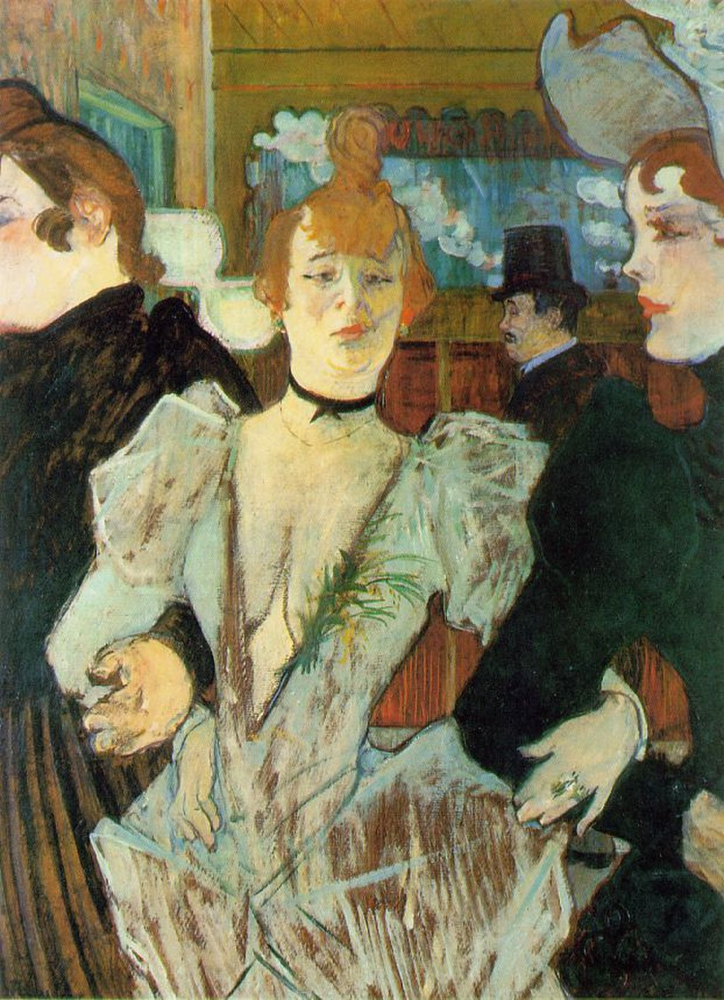

<head>
<meta charset="UTF-8" />
<meta name="keywords" content="drawing, painting" />
<meta name="description" content="drawings by Sunjy" />
<title>Sunjy</title>
<link rel="shortcut icon" type="image/x-icon" href="../../mImages/mCommon/favicon.ico" media="screen" />
<link rel="stylesheet" type="text/css" href="../../mCsses/mCommon/mCssA.css" />
<link rel="stylesheet" type="text/css" href="../../mCsses/mCommon/mCssB.css" />
<link rel="stylesheet" type="text/css" href="../../mCsses/mCommon/mCssC.css" />
<link rel="stylesheet" type="text/css" href="../../mCsses/mCommon/mCssD.css" />
<link rel="stylesheet" type="text/css" href="../../mCsses/mContent/mCssA.css" />
<link rel="stylesheet" type="text/css" href="../../mCsses/mContent/mCssB.css" />
<link rel="stylesheet" type="text/css" href="../../mCsses/mContent/mCssC.css" />
<link rel="stylesheet" type="text/css" href="../../mCsses/mContent/mCssD.css" />
</head>
<script type="text/javascript" src="../../mScripts/mContent/mContentAA.js" /></script>
<script type="text/javascript" src="../../mScripts/mContent/mContentAB.js" /></script>
<script type="text/javascript" src="../../mScripts/mContent/mContentAC.js" /></script>
<script type="text/javascript" src="../../mScripts/mContent/mContentAD.js" /></script>
<script type="text/javascript"></script> 
<script type="text/javascript">
document.write('<div class="mImgAbsolute"></div>');
/*
document.write('<p class="mFontSizeBColor" />From a white paper...</p>');
document.write('<table class="center"><tr><td>');
document.write('');
document.write('</td></tr></table>');
*/
</script>


<script type="text/javascript">
document.write('<p class="mFontSizeBColor" />La Goulue arriving at the Moulin Rouge</p>');
document.write('<p class="mFontSizeSColor" />“La Goulue arriving at the Moulin Rouge” by Henri de Toulouse-Lautrec depicts La Goulue, which was the stage name of Louise Weber (1866 – 1929), a French can-can dancer who was a star of the Moulin Rouge, a famous cabaret in Paris, near Montmartre. La Goulue was the most successful can-can dancer of her time. Weber became known as La Goulue because, as an adolescent, she was known for guzzling cabaret patrons’ drinks while dancing. She also was referred to as the Queen of Montmartre.<br><br>She initially worked as a washerwoman until she was discovered. At age 16, she was working with her mother in the laundry, but behind her mother’s back began sneaking off to a dance hall dressed in a customer’s “borrowed” dress. Having achieved both fame and fortune, Weber parted company with the Moulin Rouge in 1895 and strike out on her own.<br><br>She invested a considerable amount of money into a show that traveled the country as part of a large fair, but her business venture was a failure. La Goulue disappeared from the public eye and suffering from depression, and she drank heavily. Destitute, La Goulue returned to Montmartre in 1928 where she eked out her living selling peanuts and cigarettes on a street corner near the Moulin Rouge. Few recognized the former Queen of Montmartre, and she died at age 62.<br></p>');
document.write('<table class="center" /><tr><td>');
document.write('<br>She initially worked as a washerwoman until she was discovered. At age 16, she was working with her mother in the laundry, but behind her mother’s back began sneaking off to a dance hall dressed in a customer’s “borrowed” dress. Having achieved both fame and fortune, Weber parted company with the Moulin Rouge in 1895 and strike out on her own.<br><br>She invested a considerable amount of money into a show that traveled the country as part of a large fair, but her business venture was a failure. La Goulue disappeared from the public eye and suffering from depression, and she drank heavily. Destitute, La Goulue returned to Montmartre in 1928 where she eked out her living selling peanuts and cigarettes on a street corner near the Moulin Rouge. Few recognized the former Queen of Montmartre, and she died at age 62.<br>" />');
document.write('</td></tr></table>');
</script>


